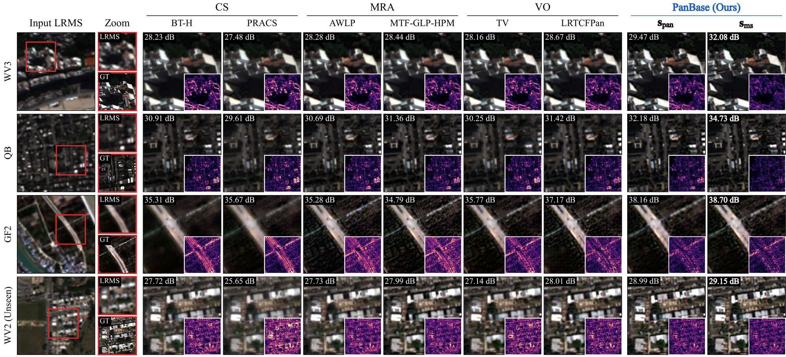
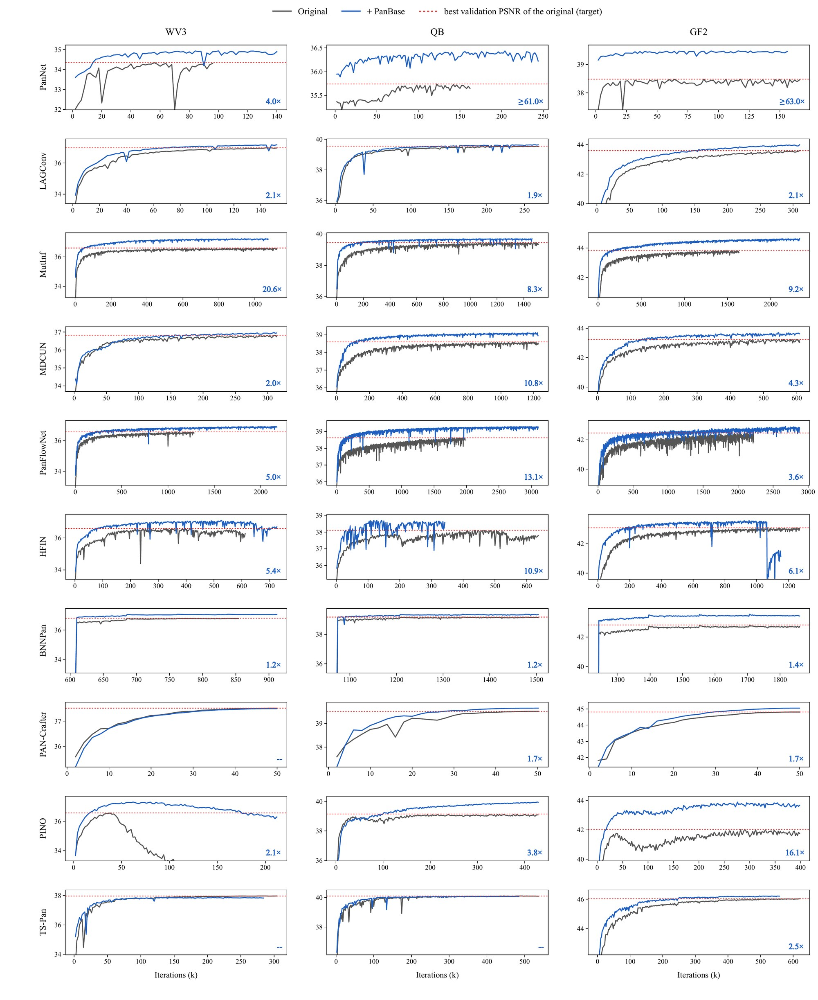
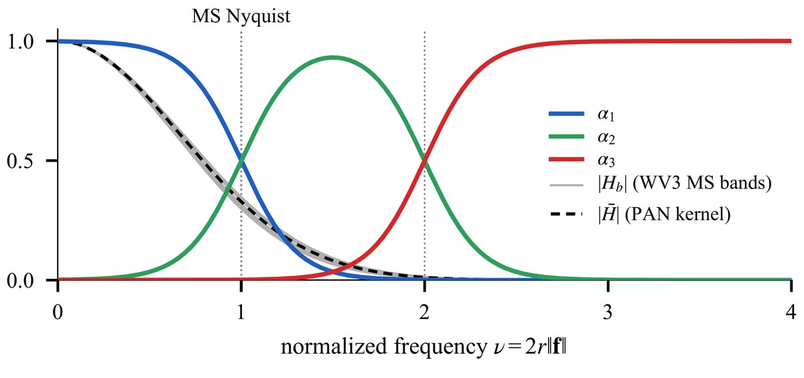

Why start with a blurry base?
Residual networks add their prediction to the interpolated LRMS. PanBase starts from a sharper base built from PAN detail, consistent with the LRMS, before any network.

All methods, same scenes
The bases themselves, ten backbones with and without PanBase, and twelve classical methods, on the test images of the paper’s figures. Select a tile to compare two results with a slider.
The interpolated LRMS is the conventional starting point of a residual network; PanBase is built from the same PAN and LRMS before any network. Numbers: PSNR of each base against the HRMS ground truth, whole test image.
The interpolated LRMS is the conventional starting point of a residual network; PanBase is built from the same PAN and LRMS before any network. Numbers: PSNR of each base against the HRMS ground truth, whole test image.
The interpolated LRMS is the conventional starting point of a residual network; PanBase is built from the same PAN and LRMS before any network. Numbers: PSNR of each base against the HRMS ground truth, whole test image.
The interpolated LRMS is the conventional starting point of a residual network; PanBase is built from the same PAN and LRMS before any network. Numbers: PSNR of each base against the HRMS ground truth, whole test image. WV2 is unseen: models and PanBase coefficients come from WV3, without fine-tuning.
Each backbone as published and retrained with PanBase as its global residual base and an extra input, under its own recipe and a matched budget. Numbers: PSNR on the whole test image; bold marks the better of each pair.
Each backbone as published and retrained with PanBase as its global residual base and an extra input, under its own recipe and a matched budget. Numbers: PSNR on the whole test image; bold marks the better of each pair.
Each backbone as published and retrained with PanBase as its global residual base and an extra input, under its own recipe and a matched budget. Numbers: PSNR on the whole test image; bold marks the better of each pair.
Each backbone as published and retrained with PanBase as its global residual base and an extra input, under its own recipe and a matched budget. Numbers: PSNR on the whole test image; bold marks the better of each pair. WV2 is unseen: models and PanBase coefficients come from WV3, without fine-tuning.
Standalone PanBase, aligned to PAN or to MS, against classical fusion; no method uses a neural network. Numbers: PSNR on the whole test image; bold marks the best of the scene.
Standalone PanBase, aligned to PAN or to MS, against classical fusion; no method uses a neural network. Numbers: PSNR on the whole test image; bold marks the best of the scene.
Standalone PanBase, aligned to PAN or to MS, against classical fusion; no method uses a neural network. Numbers: PSNR on the whole test image; bold marks the best of the scene.
Standalone PanBase, aligned to PAN or to MS, against classical fusion; no method uses a neural network. Numbers: PSNR on the whole test image; bold marks the best of the scene. WV2 is unseen: models and PanBase coefficients come from WV3, without fine-tuning.
Use the arrows or the ← → keys to change scene · click a tile to open the comparison sliderSwipe or use the arrows to change scene · tap a tile to open the comparison slider
Paper figures







Quantitative results
PanBase improves RR PSNR in 39 of 40 backbone–sensor pairs, by up to 6.93 dB, and reaches each original backbone’s best score 4.4× faster on average. On its own, it outperforms every classical method compared.
Main tables
| Method | Venue | RR PSNR↑ (dB) | FR HQNR↑ | Training speed-up↑ | ||||||
|---|---|---|---|---|---|---|---|---|---|---|
| WV3 | QB | GF2 | WV2† | WV3 | QB | GF2 | WV2† | |||
| PanNet | ICCV'17 | 34.29 | 33.83 | 36.87 | 28.51 | 0.934 | 0.843 | 0.915 | 0.968 | – |
| + PanBase | – | 34.96+0.67 | 34.20+0.37 | 37.98+1.10 | 29.10+0.59 | 0.967+0.034 | 0.857+0.015 | 0.927+0.012 | 0.958−0.010 | 60.0× |
| LAGConv | AAAI'22 | 37.22 | 37.96 | 42.47 | 28.71 | 0.944 | 0.923 | 0.915 | 0.949 | – |
| + PanBase | – | 37.34+0.13 | 38.11+0.15 | 42.82+0.35 | 29.17+0.46 | 0.958+0.014 | 0.911−0.012 | 0.949+0.034 | 0.903−0.046 | 2.1× |
| MutInf | CVPR'22 | 35.77 | 36.64 | 36.65 | 28.87 | 0.913 | 0.876 | 0.943 | 0.902 | – |
| + PanBase | – | 37.05+1.28 | 38.33+1.69 | 43.59+6.93 | 29.01+0.14 | 0.967+0.055 | 0.905+0.029 | 0.973+0.031 | 0.940+0.038 | 9.2× |
| MDCUN | CVPR'22 | 36.95 | 35.99 | 42.04 | 28.96 | 0.961 | 0.914 | 0.953 | 0.938 | – |
| + PanBase | – | 37.12+0.17 | 37.66+1.67 | 42.57+0.53 | 30.05+1.09 | 0.967+0.006 | 0.943+0.029 | 0.964+0.011 | 0.961+0.023 | 4.3× |
| PanFlowNet | ICCV'23 | 35.76 | 36.23 | 38.56 | 27.78 | 0.918 | 0.853 | 0.904 | 0.869 | – |
| + PanBase | – | 36.53+0.76 | 37.87+1.65 | 40.12+1.55 | 28.19+0.41 | 0.954+0.036 | 0.831−0.022 | 0.928+0.024 | 0.936+0.067 | 5.0× |
| HFIN | CVPR'24 | 36.53 | 35.17 | 38.08 | 28.39 | 0.917 | 0.796 | 0.909 | 0.903 | – |
| + PanBase | – | 37.26+0.74 | 37.42+2.25 | 40.95+2.87 | 29.47+1.08 | 0.965+0.049 | 0.924+0.128 | 0.920+0.011 | 0.952+0.048 | 6.1× |
| BNNPan | CVPR'25 | 36.73 | 37.38 | 42.12 | 27.35 | 0.936 | 0.856 | 0.927 | 0.755 | – |
| + PanBase | – | 37.05+0.32 | 37.71+0.33 | 42.69+0.57 | 29.69+2.34 | 0.969+0.034 | 0.880+0.024 | 0.942+0.015 | 0.949+0.194 | 1.2× |
| PAN-Crafter | ICCV'25 | 37.48 | 35.75 | 44.33 | 29.04 | 0.964 | 0.826 | 0.971 | 0.949 | – |
| + PanBase | – | 37.54+0.06 | 37.74+1.99 | 44.80+0.48 | 29.90+0.86 | 0.962−0.002 | 0.846+0.020 | 0.979+0.008 | 0.937−0.012 | 1.7× |
| PINO | NeurIPS'25 | 36.42 | 37.37 | 42.48 | 29.76 | 0.959 | 0.925 | 0.979 | 0.946 | – |
| + PanBase | – | 37.26+0.84 | 38.12+0.75 | 44.20+1.72 | 30.14+0.38 | 0.961+0.002 | 0.935+0.009 | 0.986+0.007 | 0.953+0.007 | 3.8× |
| TS-Pan | TGRS'26 | 37.90 | 38.53 | 41.94 | 29.59 | 0.946 | 0.743 | 0.944 | 0.920 | – |
| + PanBase | – | 37.51−0.40 | 38.54+0.01 | 44.34+2.40 | 30.10+0.52 | 0.955+0.010 | 0.942+0.198 | 0.931−0.013 | 0.930+0.010 | 2.5× |
| Mean change (span) | +0.46 | +1.09 | +1.85 | +0.79 | +0.024 | +0.042 | +0.014 | +0.032 | 4.4× | |
| Method | WV3 | QB | GF2 | WV2 (Unseen) | ||||||||
|---|---|---|---|---|---|---|---|---|---|---|---|---|
| PSNR↑ | SAM↓ | HQNR↑ | PSNR↑ | SAM↓ | HQNR↑ | PSNR↑ | SAM↓ | HQNR↑ | PSNR↑ | SAM↓ | HQNR↑ | |
| LRMS↑ (interpolated) | 27.12 | 5.80 | 0.909 | 28.06 | 8.44 | 0.831 | 32.08 | 1.82 | 0.905 | 25.38 | 6.53 | 0.922 |
| Component substitution (CS) | ||||||||||||
| BT-H | 31.22 | 4.92 | 0.891 | 32.09 | 7.23 | 0.685 | 35.80 | 1.56 | 0.832 | 28.90 | 5.90 | 0.879 |
| BDSD-PC | 30.96 | 5.43 | 0.895 | 31.89 | 8.09 | 0.750 | 35.10 | 1.68 | 0.829 | 29.04 | 6.14 | 0.888 |
| GSA | 30.78 | 5.37 | 0.896 | 31.75 | 8.10 | 0.687 | 34.76 | 1.72 | 0.792 | 28.51 | 6.25 | 0.877 |
| PRACS | 29.95 | 5.58 | 0.935 | 31.00 | 8.19 | 0.781 | 35.32 | 1.69 | 0.865 | 27.24 | 6.32 | 0.941 |
| Multiresolution analysis (MRA) | ||||||||||||
| AWLP | 31.21 | 5.23 | 0.938 | 31.89 | 8.19 | 0.837 | 34.45 | 1.94 | 0.857 | 28.87 | 6.07 | 0.917 |
| MTF-GLP-FS | 30.91 | 5.32 | 0.929 | 32.02 | 7.79 | 0.830 | 35.43 | 1.66 | 0.853 | 28.59 | 6.19 | 0.911 |
| MTF-GLP-HPM | 31.38 | 5.13 | 0.920 | 32.24 | 7.79 | 0.826 | 34.71 | 1.65 | 0.841 | 29.10 | 6.06 | 0.904 |
| MF | 30.56 | 5.26 | 0.919 | 31.47 | 7.93 | 0.831 | 34.71 | 1.64 | 0.830 | 28.41 | 6.13 | 0.898 |
| Variational optimization (VO) | ||||||||||||
| TV | 30.48 | 5.69 | 0.952 | 31.59 | 7.51 | 0.875 | 35.04 | 1.91 | 0.881 | 28.25 | 6.03 | 0.954 |
| FE-HPM | 30.87 | 5.23 | 0.923 | 31.71 | 7.95 | 0.826 | 35.39 | 1.61 | 0.822 | 28.71 | 6.10 | 0.902 |
| PWMBF | 30.07 | 5.89 | 0.900 | 31.00 | 8.87 | 0.782 | 33.87 | 1.96 | 0.881 | 27.60 | 7.08 | 0.839 |
| LRTCFPan | 31.74 | 4.74 | 0.942 | 32.57 | 7.19 | 0.926 | 37.53 | 1.30 | 0.907 | 29.38 | 5.62 | 0.935 |
| Ours: standalone PanBase, no network | ||||||||||||
| PanBase (span) | 32.28 | 4.65 | 0.963 | 33.10 | 6.56 | 0.944 | 38.31 | 1.21 | 0.965 | 30.12 | 5.49 | 0.959 |
| PanBase (sms) | 33.88 | 4.62 | 0.915 | 36.05 | 6.11 | 0.703 | 39.86 | 1.09 | 0.971 | 30.34 | 5.48 | 0.948 |
| Base | PanNet, WV3 | PanNet, GF2 | LAGConv, WV3 | LAGConv, GF2 | ||||
|---|---|---|---|---|---|---|---|---|
| PSNR↑ | HQNR↑ | PSNR↑ | HQNR↑ | PSNR↑ | HQNR↑ | PSNR↑ | HQNR↑ | |
| LRMS↑ (Original) | 34.29 | 0.934 | 36.87 | 0.915 | 37.22 | 0.944 | 42.47 | 0.915 |
| Π(LRMS↑) | 34.75+0.46 | 0.956+0.022 | 37.62+0.74 | 0.915−0.000 | 37.35+0.13 | 0.956+0.012 | 42.90+0.43 | 0.918+0.004 |
| GSA (CS) | 34.30+0.01 | 0.915−0.019 | 35.69−1.19 | 0.839−0.076 | 37.14−0.07 | 0.955+0.011 | 42.01−0.46 | 0.908−0.006 |
| MTF-GLP-HPM (MRA) | 34.81+0.52 | 0.931−0.003 | 36.92+0.05 | 0.885−0.031 | 37.17−0.05 | 0.944−0.000 | 42.36−0.10 | 0.921+0.007 |
| LRTCFPan (VO) | 34.81+0.52 | 0.942+0.009 | 37.80+0.93 | 0.904−0.011 | 37.24+0.02 | 0.956+0.013 | 42.24−0.23 | 0.948+0.034 |
| PanBase (span) | 34.96+0.67 | 0.967+0.034 | 37.98+1.10 | 0.927+0.012 | 37.34+0.13 | 0.958+0.014 | 42.82+0.35 | 0.949+0.034 |
| Configuration | Coeff. | WV3 | QB | GF2 | WV2 (Unseen) | ||||||||
|---|---|---|---|---|---|---|---|---|---|---|---|---|---|
| PSNR↑ | SAM↓ | HQNR↑ | PSNR↑ | SAM↓ | HQNR↑ | PSNR↑ | SAM↓ | HQNR↑ | PSNR↑ | SAM↓ | HQNR↑ | ||
| Interpolated LRMS (xms,blr) | 0 | 27.12 | 5.80 | 0.909 | 28.06 | 8.44 | 0.831 | 32.08 | 1.82 | 0.905 | 25.38 | 6.53 | 0.922 |
| + Projection (Πb(·)) | 0 | 27.99 | 5.44 | 0.927 | 29.09 | 7.86 | 0.822 | 34.21 | 1.47 | 0.951 | 26.20 | 6.05 | 0.901 |
| + Additive detail (rb1=d) | C | 31.60 | 5.26 | 0.964 | 32.77 | 7.23 | 0.928 | 37.72 | 1.29 | 0.957 | 29.38 | 5.66 | 0.954 |
| + Multiplicative detail (rb2=mb⊙d) | 2C | 32.07 | 4.87 | 0.963 | 33.07 | 6.59 | 0.931 | 37.84 | 1.24 | 0.960 | 30.01 | 5.53 | 0.956 |
| + Local regression (rb3=βb⊙d) | 3C | 32.27 | 4.65 | 0.963 | 33.11 | 6.53 | 0.948 | 38.04 | 1.23 | 0.967 | 30.15 | 5.50 | 0.960 |
| + Frequency bands (rbi,j=Fj(rbi)) | 9C | 32.28 | 4.65 | 0.963 | 33.10 | 6.56 | 0.944 | 38.31 | 1.21 | 0.965 | 30.12 | 5.49 | 0.959 |
| Backbone | Dataset | RR PSNR↑ (dB) | FR HQNR↑ | ||||||
|---|---|---|---|---|---|---|---|---|---|
| Original | Skip only | Input only | Both (PanBase) | Original | Skip only | Input only | Both (PanBase) | ||
| PanNet | WV3 | 34.29 | 32.56−1.73 | 34.91+0.62 | 34.96+0.67 | 0.934 | 0.963+0.029 | 0.962+0.028 | 0.967+0.034 |
| QB | 33.83 | 33.88+0.05 | 33.87+0.04 | 34.20+0.37 | 0.843 | 0.915+0.072 | 0.861+0.018 | 0.857+0.015 | |
| GF2 | 36.87 | 38.11+1.24 | 37.78+0.91 | 37.98+1.10 | 0.915 | 0.976+0.061 | 0.929+0.014 | 0.927+0.012 | |
| LAGConv | WV3 | 37.22 | 37.30+0.08 | 37.37+0.15 | 37.34+0.13 | 0.944 | 0.963+0.020 | 0.963+0.019 | 0.958+0.014 |
| QB | 37.96 | 38.04+0.08 | 37.97+0.01 | 38.11+0.15 | 0.923 | 0.928+0.005 | 0.846−0.077 | 0.911−0.012 | |
| GF2 | 42.47 | 42.87+0.41 | 42.81+0.35 | 42.82+0.35 | 0.915 | 0.942+0.028 | 0.939+0.025 | 0.949+0.034 | |
| PINO | WV3 | 36.42 | 37.30+0.88 | 36.29−0.13 | 37.26+0.84 | 0.959 | 0.962+0.003 | 0.957−0.001 | 0.961+0.002 |
| QB | 37.37 | 37.21−0.15 | 37.48+0.11 | 38.12+0.75 | 0.925 | 0.936+0.011 | 0.930+0.004 | 0.935+0.009 | |
| GF2 | 42.48 | 43.71+1.23 | 42.87+0.40 | 44.20+1.72 | 0.979 | 0.981+0.002 | 0.979 0.000 | 0.986+0.007 | |
| Mean change | – | +0.23 | +0.27 | +0.68 | – | +0.026 | +0.003 | +0.013 | |
More backbones Tables 7–9 · 15 backbones, PAN- and MS-aligned PanBase
| Backbone | Main components |
|---|---|
| CNN | |
| PanNet | High-pass residual network with an upsampled-MS skip |
| LAGConv | Residual network with locally adaptive convolutions |
| MutInf | Edge-aware PAN and MS features fused by invertible coupling blocks |
| MDCUN | Six-stage deep unfolding with memory and convolutional priors |
| PanFlowNet | Conditional normalizing flow with convolutional coupling blocks |
| MSDDN | Invertible blocks for multiscale spatial and Fourier-domain fusion |
| HFIN | Hierarchical fusion of spatial, Fourier, and short-time Fourier features |
| UTeRM | Ten-stage tensor-rank minimization with convolutional proximal operators |
| BNNPan | Binary wavelet CNN with a latent diffusion prior |
| PAN-Crafter | Convolutional U-Net with local attention for PAN–MS alignment |
| Transformer | |
| PINO | Window and channel attention encoder with a Galerkin-attention decoder |
| TS-Pan | Convolutional experts followed by attention and RWKV refinement |
| State-space | |
| MMMamba | Selective scans over interleaved MS and PAN windows |
| Diffusion | |
| U-Know-DiffPAN | U-Net student distilled from a diffusion teacher with uncertainty weighting |
| PanDiT | Diffusion Transformer with DDIM sampling |
| Method | Venue | RR PSNR↑ (dB) | FR HQNR↑ | Training speed-up↑ | ||||||
|---|---|---|---|---|---|---|---|---|---|---|
| WV3 | QB | GF2 | WV2† | WV3 | QB | GF2 | WV2† | |||
| MSDDN | TGRS'23 | 35.62 | 36.47 | 38.72 | 28.65 | 0.956 | 0.910 | 0.945 | 0.931 | – |
| + PanBase (span) | – | 36.66+1.04 | 38.11+1.63 | 41.80+3.08 | 28.82+0.17 | 0.928−0.028 | 0.941+0.031 | 0.956+0.011 | 0.920−0.011 | 6.7× |
| UTeRM | TGRS'24 | 35.96 | 37.26 | 41.89 | 28.85 | 0.942 | 0.949 | 0.940 | 0.954 | – |
| + PanBase (span) | – | 36.45+0.50 | 37.40+0.14 | 42.56+0.67 | 29.13+0.28 | 0.956+0.014 | 0.941−0.007 | 0.966+0.026 | 0.922−0.032 | 1.5× |
| U-Know-DiffPAN | CVPR'25 | 37.44 | 37.00 | 43.24 | 29.20 | 0.964 | 0.939 | 0.966 | 0.966 | – |
| + PanBase (span) | – | 37.83+0.39 | 37.45+0.45 | 44.05+0.81 | 29.80+0.60 | 0.959−0.004 | 0.818−0.121 | 0.976+0.010 | 0.947−0.019 | 3.0× |
| PanDiT | TGRS'25 | 36.26 | 37.10 | 42.00 | 29.15 | 0.964 | 0.944 | 0.954 | 0.978 | – |
| + PanBase (span) | – | 36.13−0.13 | 36.67−0.43 | 42.16+0.16 | 30.17+1.03 | 0.965+0.001 | 0.953+0.009 | 0.982+0.027 | 0.962−0.016 | 1.4× |
| MMMamba | AAAI'26 | 36.23 | 36.97 | 39.68 | 28.89 | 0.952 | 0.788 | 0.928 | 0.932 | – |
| + PanBase (span) | – | 37.05+0.81 | 37.75+0.78 | 42.72+3.04 | 28.88−0.02 | 0.952 0.000 | 0.916+0.127 | 0.961+0.034 | 0.899−0.033 | 2.4× |
| Mean change (span) | +0.52 | +0.51 | +1.55 | +0.41 | −0.003 | +0.008 | +0.022 | −0.022 | 2.5× | |
| Method | Venue | RR PSNR↑ (dB) | FR HQNR↑ | Training speed-up↑ | ||||||
|---|---|---|---|---|---|---|---|---|---|---|
| WV3 | QB | GF2 | WV2† | WV3 | QB | GF2 | WV2† | |||
| PanNet | ICCV'17 | 34.29 | 33.83 | 36.87 | 28.51 | 0.934 | 0.843 | 0.915 | 0.968 | – |
| + PanBase (sms) | – | 35.22+0.93 | 36.41+2.57 | 40.06+3.18 | 29.40+0.89 | 0.967+0.034 | 0.881+0.038 | 0.963+0.047 | 0.963−0.005 | 60.0× |
| LAGConv | AAAI'22 | 37.22 | 37.96 | 42.47 | 28.71 | 0.944 | 0.923 | 0.915 | 0.949 | – |
| + PanBase (sms) | – | 37.29+0.07 | 38.12+0.16 | 43.02+0.55 | 29.07+0.36 | 0.962+0.018 | 0.900−0.022 | 0.969+0.055 | 0.936−0.013 | 1.7× |
| MutInf | CVPR'22 | 35.77 | 36.64 | 36.65 | 28.87 | 0.913 | 0.876 | 0.943 | 0.902 | – |
| + PanBase (sms) | – | 36.97+1.20 | 38.29+1.65 | 43.03+6.38 | 29.23+0.36 | 0.964+0.052 | 0.927+0.051 | 0.984+0.041 | 0.935+0.033 | 12.3× |
| MDCUN | CVPR'22 | 36.95 | 35.99 | 42.04 | 28.96 | 0.961 | 0.914 | 0.953 | 0.938 | – |
| + PanBase (sms) | – | 36.92−0.03 | 38.08+2.09 | 43.15+1.11 | 28.79−0.18 | 0.961 0.000 | 0.937+0.023 | 0.985+0.032 | 0.941+0.003 | 9.4× |
| PanFlowNet | ICCV'23 | 35.76 | 36.23 | 38.56 | 27.78 | 0.918 | 0.853 | 0.904 | 0.869 | – |
| + PanBase (sms) | – | 36.56+0.80 | 37.93+1.70 | 40.19+1.62 | 28.22+0.44 | 0.865−0.053 | 0.909+0.055 | 0.934+0.030 | 0.912+0.043 | 7.5× |
| MSDDN | TGRS'23 | 35.62 | 36.47 | 38.72 | 28.65 | 0.956 | 0.910 | 0.945 | 0.931 | – |
| + PanBase (sms) | – | 36.85+1.24 | 38.08+1.61 | 41.86+3.14 | 28.68+0.03 | 0.942−0.014 | 0.946+0.035 | 0.971+0.027 | 0.899−0.031 | 7.1× |
| HFIN | CVPR'24 | 36.53 | 35.17 | 38.08 | 28.39 | 0.917 | 0.796 | 0.909 | 0.903 | – |
| + PanBase (sms) | – | 37.40+0.87 | 38.03+2.86 | 42.56+4.48 | 28.68+0.29 | 0.966+0.050 | 0.896+0.101 | 0.966+0.057 | 0.922+0.019 | 12.7× |
| UTeRM | TGRS'24 | 35.96 | 37.26 | 41.89 | 28.85 | 0.942 | 0.949 | 0.940 | 0.954 | – |
| + PanBase (sms) | – | 36.46+0.50 | 37.54+0.28 | 42.69+0.80 | 29.45+0.60 | 0.963+0.021 | 0.894−0.055 | 0.974+0.034 | 0.946−0.009 | 1.4× |
| BNNPan | CVPR'25 | 36.73 | 37.38 | 42.12 | 27.35 | 0.936 | 0.856 | 0.927 | 0.755 | – |
| + PanBase (sms) | – | – | – | – | – | – | – | – | – | – |
| U-Know-DiffPAN | CVPR'25 | 37.44 | 37.00 | 43.24 | 29.20 | 0.964 | 0.939 | 0.966 | 0.966 | – |
| + PanBase (sms) | – | 37.89+0.45 | 37.90+0.90 | – | 30.04+0.84 | 0.963 0.000 | 0.871−0.068 | – | 0.960−0.006 | 2.2× |
| PAN-Crafter | ICCV'25 | 37.48 | 35.75 | 44.33 | 29.04 | 0.964 | 0.826 | 0.971 | 0.949 | – |
| + PanBase (sms) | – | 37.60+0.12 | 37.93+2.18 | 45.00+0.67 | 28.88−0.16 | 0.960−0.004 | 0.935+0.109 | 0.981+0.010 | 0.933−0.015 | 1.7× |
| PINO | NeurIPS'25 | 36.42 | 37.37 | 42.48 | 29.76 | 0.959 | 0.925 | 0.979 | 0.946 | – |
| + PanBase (sms) | – | 37.55+1.13 | 38.03+0.66 | 44.66+2.19 | 30.43+0.67 | 0.954−0.005 | 0.945+0.020 | 0.984+0.004 | 0.941−0.005 | 12.0× |
| PanDiT | TGRS'25 | 36.26 | 37.10 | 42.00 | 29.15 | 0.964 | 0.944 | 0.954 | 0.978 | – |
| + PanBase (sms) | – | 36.47+0.21 | 37.40+0.30 | 42.34+0.35 | 30.37+1.22 | 0.962−0.002 | 0.837−0.107 | 0.978+0.024 | 0.962−0.016 | 1.3× |
| MMMamba | AAAI'26 | 36.23 | 36.97 | 39.68 | 28.89 | 0.952 | 0.788 | 0.928 | 0.932 | – |
| + PanBase (sms) | – | 36.70+0.46 | – | – | 27.96−0.93 | 0.954+0.002 | – | – | 0.877−0.056 | 2.0× |
| TS-Pan | TGRS'26 | 37.90 | 38.53 | 41.94 | 29.59 | 0.946 | 0.743 | 0.944 | 0.920 | – |
| + PanBase (sms) | – | 37.83−0.08 | 38.49−0.04 | 44.56+2.62 | 30.15+0.56 | 0.934−0.012 | 0.868+0.124 | 0.979+0.034 | 0.935+0.015 | 1.2× |
| Mean change (sms) | +0.56 | +1.30 | +2.26 | +0.36 | +0.006 | +0.023 | +0.033 | −0.003 | 4.5× | |
| Mean change (span), same cells | +0.49 | +0.95 | +1.82 | +0.54 | +0.013 | +0.024 | +0.016 | +0.001 | 4.0× | |
All metrics per sensor Tables 10–13 · RR and FR, every backbone
All metrics per sensor
| Method | Reduced resolution (HRMS reference) | Full resolution (no reference) | |||||||||
|---|---|---|---|---|---|---|---|---|---|---|---|
| PSNR↑ | SSIM↑ | SAM↓ | ERGAS↓ | SCC↑ | Q2n↑ | LPIPS↓ | DISTS↓ | Dλ↓ | Ds↓ | HQNR↑ | |
| PanNet | 34.29 | 0.9467 | 4.24 | 3.14 | 0.8046 | 0.8719 | 0.0808 | 0.1187 | 0.0107 | 0.0564 | 0.934 |
| + PanBase (span) | 34.96 | 0.9531 | 3.89 | 2.92 | 0.8132 | 0.8885 | 0.0510 | 0.0895 | 0.0032 | 0.0296 | 0.967 |
| + PanBase (sms) | 35.22 | 0.9546 | 3.91 | 2.84 | 0.8252 | 0.8812 | 0.0574 | 0.0900 | 0.0047 | 0.0281 | 0.967 |
| LAGConv | 37.22 | 0.9713 | 3.09 | 2.25 | 0.8739 | 0.9099 | 0.0317 | 0.0622 | 0.0132 | 0.0438 | 0.944 |
| + PanBase (span) | 37.34 | 0.9719 | 3.05 | 2.21 | 0.8753 | 0.9141 | 0.0275 | 0.0599 | 0.0056 | 0.0368 | 0.958 |
| + PanBase (sms) | 37.29 | 0.9716 | 3.08 | 2.23 | 0.8732 | 0.9120 | 0.0289 | 0.0602 | 0.0061 | 0.0323 | 0.962 |
| MutInf | 35.77 | 0.9641 | 3.55 | 2.72 | 0.8408 | 0.9030 | 0.0386 | 0.0679 | 0.0320 | 0.0577 | 0.913 |
| + PanBase (span) | 37.05 | 0.9712 | 3.10 | 2.29 | 0.8693 | 0.9143 | 0.0286 | 0.0578 | 0.0040 | 0.0290 | 0.967 |
| + PanBase (sms) | 36.97 | 0.9709 | 3.15 | 2.32 | 0.8670 | 0.9153 | 0.0291 | 0.0563 | 0.0063 | 0.0297 | 0.964 |
| MDCUN | 36.95 | 0.9709 | 3.08 | 2.31 | 0.8680 | 0.9156 | 0.0301 | 0.0622 | 0.0080 | 0.0314 | 0.961 |
| + PanBase (span) | 37.12 | 0.9710 | 3.06 | 2.27 | 0.8701 | 0.9171 | 0.0302 | 0.0601 | 0.0038 | 0.0290 | 0.967 |
| + PanBase (sms) | 36.92 | 0.9702 | 3.12 | 2.33 | 0.8648 | 0.9161 | 0.0286 | 0.0590 | 0.0034 | 0.0356 | 0.961 |
| PanFlowNet | 35.76 | 0.9657 | 3.61 | 2.63 | 0.8512 | 0.9034 | 0.0376 | 0.0736 | 0.0276 | 0.0565 | 0.918 |
| + PanBase (span) | 36.53 | 0.9679 | 3.33 | 2.46 | 0.8547 | 0.9039 | 0.0335 | 0.0626 | 0.0116 | 0.0346 | 0.954 |
| + PanBase (sms) | 36.56 | 0.9686 | 3.27 | 2.44 | 0.8602 | 0.9045 | 0.0328 | 0.0630 | 0.0501 | 0.0997 | 0.865 |
| MSDDN | 35.62 | 0.9655 | 3.49 | 2.68 | 0.8582 | 0.8968 | 0.0360 | 0.0705 | 0.0215 | 0.0234 | 0.956 |
| + PanBase (span) | 36.66 | 0.9692 | 3.26 | 2.39 | 0.8643 | 0.9091 | 0.0314 | 0.0598 | 0.0069 | 0.0658 | 0.928 |
| + PanBase (sms) | 36.85 | 0.9696 | 3.22 | 2.37 | 0.8705 | 0.9100 | 0.0290 | 0.0583 | 0.0080 | 0.0507 | 0.942 |
| HFIN | 36.53 | 0.9696 | 3.31 | 2.46 | 0.8687 | 0.8987 | 0.0361 | 0.0682 | 0.0300 | 0.0556 | 0.917 |
| + PanBase (span) | 37.26 | 0.9720 | 3.03 | 2.23 | 0.8740 | 0.9166 | 0.0297 | 0.0592 | 0.0050 | 0.0301 | 0.965 |
| + PanBase (sms) | 37.40 | 0.9726 | 3.01 | 2.19 | 0.8766 | 0.9169 | 0.0304 | 0.0590 | 0.0052 | 0.0289 | 0.966 |
| UTeRM | 35.96 | 0.9630 | 3.39 | 2.59 | 0.8436 | 0.9025 | 0.0417 | 0.0762 | 0.0165 | 0.0422 | 0.942 |
| + PanBase (span) | 36.45 | 0.9667 | 3.30 | 2.45 | 0.8564 | 0.9077 | 0.0340 | 0.0653 | 0.0140 | 0.0303 | 0.956 |
| + PanBase (sms) | 36.46 | 0.9664 | 3.29 | 2.45 | 0.8548 | 0.9079 | 0.0362 | 0.0692 | 0.0085 | 0.0287 | 0.963 |
| BNNPan | 36.73 | 0.9691 | 3.20 | 2.37 | 0.8641 | 0.9110 | 0.0318 | 0.0657 | 0.0170 | 0.0484 | 0.936 |
| + PanBase (span) | 37.05 | 0.9710 | 3.10 | 2.28 | 0.8686 | 0.9144 | 0.0289 | 0.0589 | 0.0067 | 0.0242 | 0.969 |
| + PanBase (sms) | – | – | – | – | – | – | – | – | – | – | – |
| U-Know-DiffPAN | 37.44 | 0.9728 | 2.91 | 2.18 | 0.8783 | 0.9191 | 0.0297 | 0.0618 | 0.0070 | 0.0298 | 0.964 |
| + PanBase (span) | 37.83 | 0.9747 | 2.83 | 2.09 | 0.8843 | 0.9224 | 0.0250 | 0.0566 | 0.0044 | 0.0363 | 0.959 |
| + PanBase (sms) | 37.89 | 0.9750 | 2.82 | 2.07 | 0.8859 | 0.9226 | 0.0244 | 0.0561 | 0.0047 | 0.0321 | 0.963 |
| PAN-Crafter | 37.48 | 0.9733 | 2.93 | 2.18 | 0.8772 | 0.9183 | 0.0284 | 0.0591 | 0.0090 | 0.0269 | 0.964 |
| + PanBase (span) | 37.54 | 0.9738 | 2.93 | 2.16 | 0.8764 | 0.9206 | 0.0249 | 0.0559 | 0.0039 | 0.0341 | 0.962 |
| + PanBase (sms) | 37.60 | 0.9739 | 2.91 | 2.14 | 0.8784 | 0.9199 | 0.0258 | 0.0575 | 0.0055 | 0.0344 | 0.960 |
| PINO | 36.42 | 0.9675 | 3.36 | 2.48 | 0.8554 | 0.9095 | 0.0440 | 0.0737 | 0.0101 | 0.0312 | 0.959 |
| + PanBase (span) | 37.26 | 0.9717 | 3.07 | 2.24 | 0.8686 | 0.9136 | 0.0271 | 0.0570 | 0.0035 | 0.0353 | 0.961 |
| + PanBase (sms) | 37.55 | 0.9735 | 2.99 | 2.17 | 0.8774 | 0.9188 | 0.0239 | 0.0543 | 0.0042 | 0.0423 | 0.954 |
| PanDiT | 36.26 | 0.9655 | 3.31 | 2.51 | 0.8440 | 0.8998 | 0.0343 | 0.0670 | 0.0050 | 0.0308 | 0.964 |
| + PanBase (span) | 36.13 | 0.9641 | 3.37 | 2.56 | 0.8370 | 0.9018 | 0.0313 | 0.0638 | 0.0012 | 0.0338 | 0.965 |
| + PanBase (sms) | 36.47 | 0.9664 | 3.30 | 2.45 | 0.8463 | 0.9042 | 0.0294 | 0.0613 | 0.0015 | 0.0366 | 0.962 |
| MMMamba | 36.23 | 0.9690 | 3.29 | 2.55 | 0.8581 | 0.9150 | 0.0269 | 0.0565 | 0.0045 | 0.0436 | 0.952 |
| + PanBase (span) | 37.05 | 0.9720 | 3.02 | 2.33 | 0.8697 | 0.9188 | 0.0233 | 0.0511 | 0.0069 | 0.0413 | 0.952 |
| + PanBase (sms) | 36.70 | 0.9711 | 3.11 | 2.34 | 0.8676 | 0.9181 | 0.0265 | 0.0531 | 0.0041 | 0.0424 | 0.954 |
| TS-Pan | 37.90 | 0.9754 | 2.84 | 2.07 | 0.8847 | 0.9173 | 0.0230 | 0.0543 | 0.0051 | 0.0495 | 0.946 |
| + PanBase (span) | 37.51 | 0.9716 | 3.01 | 2.19 | 0.8593 | 0.9061 | 0.0326 | 0.1059 | 0.0015 | 0.0432 | 0.955 |
| + PanBase (sms) | 37.83 | 0.9750 | 2.89 | 2.08 | 0.8814 | 0.9125 | 0.0226 | 0.0550 | 0.0030 | 0.0632 | 0.934 |
| Mean change (span) | +0.48 | +0.0022 | −0.15 | −0.14 | +0.0047 | +0.0051 | −0.0061 | −0.0050 | −0.0090 | −0.0062 | +0.015 |
| Mean change (sms) | +0.56 | +0.0028 | −0.17 | −0.17 | +0.0087 | +0.0057 | −0.0067 | −0.0085 | −0.0060 | +0.0004 | +0.006 |
| Method | Reduced resolution (HRMS reference) | Full resolution (no reference) | |||||||||
|---|---|---|---|---|---|---|---|---|---|---|---|
| PSNR↑ | SSIM↑ | SAM↓ | ERGAS↓ | SCC↑ | Q2n↑ | LPIPS↓ | DISTS↓ | Dλ↓ | Ds↓ | HQNR↑ | |
| PanNet | 33.83 | 0.9084 | 6.35 | 6.01 | 0.7354 | 0.8826 | 0.1197 | 0.1565 | 0.0262 | 0.1350 | 0.843 |
| + PanBase (span) | 34.20 | 0.9125 | 6.04 | 5.75 | 0.7378 | 0.8889 | 0.0947 | 0.1302 | 0.0409 | 0.1064 | 0.857 |
| + PanBase (sms) | 36.41 | 0.9405 | 5.53 | 4.45 | 0.8315 | 0.9178 | 0.0691 | 0.1128 | 0.0502 | 0.0723 | 0.881 |
| LAGConv | 37.96 | 0.9598 | 4.54 | 3.73 | 0.8636 | 0.9344 | 0.0583 | 0.0960 | 0.0245 | 0.0539 | 0.923 |
| + PanBase (span) | 38.11 | 0.9607 | 4.50 | 3.66 | 0.8658 | 0.9374 | 0.0502 | 0.0916 | 0.0231 | 0.0677 | 0.911 |
| + PanBase (sms) | 38.12 | 0.9609 | 4.50 | 3.66 | 0.8645 | 0.9369 | 0.0497 | 0.0910 | 0.0230 | 0.0782 | 0.900 |
| MutInf | 36.64 | 0.9510 | 5.07 | 4.37 | 0.8416 | 0.9174 | 0.0704 | 0.1095 | 0.0609 | 0.0681 | 0.876 |
| + PanBase (span) | 38.33 | 0.9628 | 4.41 | 3.57 | 0.8693 | 0.9393 | 0.0501 | 0.0912 | 0.0392 | 0.0583 | 0.905 |
| + PanBase (sms) | 38.29 | 0.9628 | 4.41 | 3.59 | 0.8664 | 0.9389 | 0.0560 | 0.0902 | 0.0353 | 0.0394 | 0.927 |
| MDCUN | 35.99 | 0.9451 | 4.92 | 4.73 | 0.8089 | 0.9153 | 0.0663 | 0.1055 | 0.0321 | 0.0564 | 0.914 |
| + PanBase (span) | 37.66 | 0.9580 | 4.56 | 3.86 | 0.8553 | 0.9335 | 0.0573 | 0.0961 | 0.0153 | 0.0426 | 0.943 |
| + PanBase (sms) | 38.08 | 0.9606 | 4.45 | 3.67 | 0.8642 | 0.9364 | 0.0542 | 0.0937 | 0.0213 | 0.0427 | 0.937 |
| PanFlowNet | 36.23 | 0.9419 | 5.14 | 4.72 | 0.7913 | 0.9123 | 0.0653 | 0.1053 | 0.0712 | 0.0813 | 0.853 |
| + PanBase (span) | 37.87 | 0.9589 | 4.62 | 3.76 | 0.8626 | 0.9329 | 0.0557 | 0.0937 | 0.1184 | 0.0575 | 0.831 |
| + PanBase (sms) | 37.93 | 0.9590 | 4.62 | 3.74 | 0.8643 | 0.9343 | 0.0518 | 0.0944 | 0.0426 | 0.0509 | 0.909 |
| MSDDN | 36.47 | 0.9459 | 5.29 | 4.43 | 0.8451 | 0.9199 | 0.0572 | 0.1024 | 0.0503 | 0.0415 | 0.910 |
| + PanBase (span) | 38.11 | 0.9608 | 4.55 | 3.66 | 0.8672 | 0.9368 | 0.0489 | 0.0846 | 0.0247 | 0.0353 | 0.941 |
| + PanBase (sms) | 38.08 | 0.9607 | 4.52 | 3.67 | 0.8651 | 0.9376 | 0.0510 | 0.0899 | 0.0238 | 0.0313 | 0.946 |
| HFIN | 35.17 | 0.9263 | 5.45 | 5.35 | 0.7545 | 0.8920 | 0.0819 | 0.1187 | 0.1024 | 0.1141 | 0.796 |
| + PanBase (span) | 37.42 | 0.9544 | 4.77 | 3.97 | 0.8524 | 0.9306 | 0.0547 | 0.0939 | 0.0341 | 0.0436 | 0.924 |
| + PanBase (sms) | 38.03 | 0.9599 | 4.50 | 3.70 | 0.8650 | 0.9355 | 0.0543 | 0.0941 | 0.0402 | 0.0665 | 0.896 |
| UTeRM | 37.26 | 0.9544 | 4.68 | 4.04 | 0.8462 | 0.9278 | 0.0755 | 0.1063 | 0.0197 | 0.0324 | 0.949 |
| + PanBase (span) | 37.40 | 0.9552 | 4.69 | 3.97 | 0.8512 | 0.9280 | 0.0731 | 0.1061 | 0.0303 | 0.0295 | 0.941 |
| + PanBase (sms) | 37.54 | 0.9564 | 4.63 | 3.90 | 0.8536 | 0.9308 | 0.0670 | 0.1042 | 0.0621 | 0.0469 | 0.894 |
| BNNPan | 37.38 | 0.9541 | 4.82 | 3.99 | 0.8515 | 0.9293 | 0.0571 | 0.1004 | 0.0451 | 0.1032 | 0.856 |
| + PanBase (span) | 37.71 | 0.9570 | 4.70 | 3.83 | 0.8571 | 0.9326 | 0.0534 | 0.0945 | 0.0307 | 0.0923 | 0.880 |
| + PanBase (sms) | – | – | – | – | – | – | – | – | – | – | – |
| U-Know-DiffPAN | 37.00 | 0.9534 | 4.61 | 4.15 | 0.8188 | 0.9304 | 0.0570 | 0.0955 | 0.0211 | 0.0411 | 0.939 |
| + PanBase (span) | 37.45 | 0.9572 | 4.48 | 3.94 | 0.8305 | 0.9330 | 0.0567 | 0.0916 | 0.1018 | 0.0893 | 0.818 |
| + PanBase (sms) | 37.90 | 0.9602 | 4.38 | 3.75 | 0.8468 | 0.9368 | 0.0526 | 0.0897 | 0.0536 | 0.0798 | 0.871 |
| PAN-Crafter | 35.75 | 0.9271 | 5.34 | 5.23 | 0.7378 | 0.8920 | 0.0853 | 0.1097 | 0.0684 | 0.1133 | 0.826 |
| + PanBase (span) | 37.74 | 0.9571 | 4.74 | 3.83 | 0.8553 | 0.9336 | 0.0563 | 0.0972 | 0.0474 | 0.1116 | 0.846 |
| + PanBase (sms) | 37.93 | 0.9605 | 4.53 | 3.73 | 0.8580 | 0.9368 | 0.0480 | 0.0923 | 0.0180 | 0.0479 | 0.935 |
| PINO | 37.37 | 0.9529 | 5.40 | 4.00 | 0.8509 | 0.9258 | 0.0947 | 0.1279 | 0.0200 | 0.0558 | 0.925 |
| + PanBase (span) | 38.12 | 0.9604 | 4.59 | 3.65 | 0.8648 | 0.9365 | 0.0577 | 0.0920 | 0.0231 | 0.0431 | 0.935 |
| + PanBase (sms) | 38.03 | 0.9602 | 4.53 | 3.69 | 0.8616 | 0.9375 | 0.0532 | 0.0911 | 0.0176 | 0.0376 | 0.945 |
| PanDiT | 37.10 | 0.9522 | 4.91 | 4.11 | 0.8406 | 0.9282 | 0.0619 | 0.0993 | 0.0146 | 0.0424 | 0.944 |
| + PanBase (span) | 36.67 | 0.9481 | 4.98 | 4.32 | 0.8265 | 0.9244 | 0.0603 | 0.0949 | 0.0059 | 0.0417 | 0.953 |
| + PanBase (sms) | 37.40 | 0.9541 | 4.81 | 3.97 | 0.8473 | 0.9296 | 0.0573 | 0.0917 | 0.0049 | 0.1590 | 0.837 |
| MMMamba | 36.97 | 0.9561 | 4.74 | 4.19 | 0.8294 | 0.9269 | 0.0505 | 0.0929 | 0.0633 | 0.1586 | 0.788 |
| + PanBase (span) | 37.75 | 0.9605 | 4.46 | 3.81 | 0.8514 | 0.9365 | 0.0508 | 0.0894 | 0.0382 | 0.0478 | 0.916 |
| + PanBase (sms) | – | – | – | – | – | – | – | – | – | – | – |
| TS-Pan | 38.53 | 0.9634 | 4.33 | 3.48 | 0.8674 | 0.9384 | 0.0535 | 0.0971 | 0.1402 | 0.1357 | 0.743 |
| + PanBase (span) | 38.54 | 0.9642 | 4.31 | 3.48 | 0.8697 | 0.9407 | 0.0492 | 0.0869 | 0.0251 | 0.0341 | 0.942 |
| + PanBase (sms) | 38.49 | 0.9636 | 4.37 | 3.50 | 0.8652 | 0.9391 | 0.0475 | 0.0896 | 0.0095 | 0.1239 | 0.868 |
| Mean change (span) | +0.89 | +0.0091 | −0.35 | −0.50 | +0.0289 | +0.0128 | −0.0124 | −0.0126 | −0.0108 | −0.0221 | +0.030 |
| Mean change (sms) | +1.30 | +0.0137 | −0.48 | −0.72 | +0.0424 | +0.0178 | −0.0181 | −0.0158 | −0.0192 | −0.0073 | +0.023 |
| Method | Reduced resolution (HRMS reference) | Full resolution (no reference) | |||||||||
|---|---|---|---|---|---|---|---|---|---|---|---|
| PSNR↑ | SSIM↑ | SAM↓ | ERGAS↓ | SCC↑ | Q2n↑ | LPIPS↓ | DISTS↓ | Dλ↓ | Ds↓ | HQNR↑ | |
| PanNet | 36.87 | 0.9361 | 1.33 | 1.34 | 0.7032 | 0.9371 | 0.0846 | 0.1205 | 0.0041 | 0.0811 | 0.915 |
| + PanBase (span) | 37.98 | 0.9460 | 1.15 | 1.19 | 0.7276 | 0.9499 | 0.0609 | 0.0957 | 0.0018 | 0.0711 | 0.927 |
| + PanBase (sms) | 40.06 | 0.9629 | 1.03 | 0.92 | 0.8412 | 0.9642 | 0.0537 | 0.0918 | 0.0012 | 0.0363 | 0.963 |
| LAGConv | 42.47 | 0.9795 | 0.78 | 0.70 | 0.8921 | 0.9795 | 0.0252 | 0.0662 | 0.0041 | 0.0817 | 0.915 |
| + PanBase (span) | 42.82 | 0.9806 | 0.76 | 0.67 | 0.8933 | 0.9811 | 0.0230 | 0.0622 | 0.0015 | 0.0496 | 0.949 |
| + PanBase (sms) | 43.02 | 0.9810 | 0.76 | 0.66 | 0.8964 | 0.9815 | 0.0228 | 0.0627 | 0.0008 | 0.0300 | 0.969 |
| MutInf | 36.65 | 0.9545 | 1.35 | 1.39 | 0.8053 | 0.9413 | 0.0434 | 0.0962 | 0.0228 | 0.0355 | 0.943 |
| + PanBase (span) | 43.59 | 0.9832 | 0.72 | 0.61 | 0.9100 | 0.9839 | 0.0186 | 0.0551 | 0.0015 | 0.0252 | 0.973 |
| + PanBase (sms) | 43.03 | 0.9814 | 0.74 | 0.65 | 0.9011 | 0.9817 | 0.0202 | 0.0572 | 0.0007 | 0.0153 | 0.984 |
| MDCUN | 42.04 | 0.9768 | 0.81 | 0.74 | 0.8721 | 0.9783 | 0.0241 | 0.0625 | 0.0006 | 0.0467 | 0.953 |
| + PanBase (span) | 42.57 | 0.9788 | 0.77 | 0.70 | 0.8813 | 0.9801 | 0.0213 | 0.0597 | 0.0004 | 0.0358 | 0.964 |
| + PanBase (sms) | 43.15 | 0.9818 | 0.74 | 0.65 | 0.8926 | 0.9826 | 0.0201 | 0.0573 | 0.0002 | 0.0152 | 0.985 |
| PanFlowNet | 38.56 | 0.9619 | 1.28 | 1.09 | 0.8226 | 0.9593 | 0.0451 | 0.1001 | 0.0262 | 0.0724 | 0.904 |
| + PanBase (span) | 40.12 | 0.9669 | 0.99 | 0.89 | 0.8366 | 0.9656 | 0.0366 | 0.0848 | 0.0094 | 0.0634 | 0.928 |
| + PanBase (sms) | 40.19 | 0.9674 | 0.97 | 0.87 | 0.8581 | 0.9640 | 0.0394 | 0.0916 | 0.0070 | 0.0598 | 0.934 |
| MSDDN | 38.72 | 0.9664 | 1.15 | 1.07 | 0.8667 | 0.9486 | 0.0330 | 0.0812 | 0.0142 | 0.0416 | 0.945 |
| + PanBase (span) | 41.80 | 0.9769 | 0.79 | 0.75 | 0.8685 | 0.9773 | 0.0237 | 0.0635 | 0.0010 | 0.0429 | 0.956 |
| + PanBase (sms) | 41.86 | 0.9767 | 0.80 | 0.74 | 0.8686 | 0.9777 | 0.0252 | 0.0676 | 0.0005 | 0.0281 | 0.971 |
| HFIN | 38.08 | 0.9716 | 1.07 | 1.13 | 0.8615 | 0.9282 | 0.0364 | 0.0882 | 0.0392 | 0.0538 | 0.909 |
| + PanBase (span) | 40.95 | 0.9711 | 0.95 | 0.87 | 0.8451 | 0.9729 | 0.0260 | 0.0678 | 0.0019 | 0.0786 | 0.920 |
| + PanBase (sms) | 42.56 | 0.9793 | 0.80 | 0.69 | 0.8879 | 0.9796 | 0.0230 | 0.0675 | 0.0009 | 0.0328 | 0.966 |
| UTeRM | 41.89 | 0.9759 | 0.84 | 0.75 | 0.8713 | 0.9771 | 0.0286 | 0.0748 | 0.0024 | 0.0574 | 0.940 |
| + PanBase (span) | 42.56 | 0.9785 | 0.80 | 0.70 | 0.8827 | 0.9793 | 0.0247 | 0.0698 | 0.0009 | 0.0327 | 0.966 |
| + PanBase (sms) | 42.69 | 0.9794 | 0.79 | 0.70 | 0.8832 | 0.9808 | 0.0226 | 0.0634 | 0.0002 | 0.0259 | 0.974 |
| BNNPan | 42.12 | 0.9774 | 0.81 | 0.72 | 0.8813 | 0.9778 | 0.0271 | 0.0715 | 0.0036 | 0.0694 | 0.927 |
| + PanBase (span) | 42.69 | 0.9791 | 0.77 | 0.68 | 0.8870 | 0.9799 | 0.0265 | 0.0697 | 0.0020 | 0.0557 | 0.942 |
| + PanBase (sms) | – | – | – | – | – | – | – | – | – | – | – |
| U-Know-DiffPAN | 43.24 | 0.9824 | 0.68 | 0.64 | 0.8924 | 0.9833 | 0.0233 | 0.0594 | 0.0012 | 0.0325 | 0.966 |
| + PanBase (span) | 44.05 | 0.9845 | 0.64 | 0.59 | 0.9054 | 0.9853 | 0.0213 | 0.0552 | 0.0005 | 0.0235 | 0.976 |
| + PanBase (sms) | – | – | – | – | – | – | – | – | – | – | – |
| PAN-Crafter | 44.33 | 0.9857 | 0.65 | 0.57 | 0.9192 | 0.9860 | 0.0205 | 0.0565 | 0.0041 | 0.0254 | 0.971 |
| + PanBase (span) | 44.80 | 0.9868 | 0.62 | 0.53 | 0.9224 | 0.9872 | 0.0167 | 0.0524 | 0.0013 | 0.0198 | 0.979 |
| + PanBase (sms) | 45.00 | 0.9872 | 0.61 | 0.52 | 0.9235 | 0.9875 | 0.0174 | 0.0526 | 0.0014 | 0.0179 | 0.981 |
| PINO | 42.48 | 0.9808 | 0.91 | 0.72 | 0.9023 | 0.9811 | 0.0300 | 0.0717 | 0.0024 | 0.0185 | 0.979 |
| + PanBase (span) | 44.20 | 0.9852 | 0.69 | 0.57 | 0.9136 | 0.9855 | 0.0204 | 0.0569 | 0.0011 | 0.0125 | 0.986 |
| + PanBase (sms) | 44.66 | 0.9860 | 0.65 | 0.54 | 0.9172 | 0.9864 | 0.0205 | 0.0597 | 0.0004 | 0.0161 | 0.984 |
| PanDiT | 42.00 | 0.9767 | 0.80 | 0.74 | 0.8690 | 0.9786 | 0.0245 | 0.0698 | 0.0009 | 0.0449 | 0.954 |
| + PanBase (span) | 42.16 | 0.9769 | 0.80 | 0.73 | 0.8692 | 0.9791 | 0.0236 | 0.0691 | 0.0001 | 0.0184 | 0.982 |
| + PanBase (sms) | 42.34 | 0.9777 | 0.80 | 0.71 | 0.8727 | 0.9794 | 0.0240 | 0.0674 | 0.0001 | 0.0220 | 0.978 |
| MMMamba | 39.68 | 0.9484 | 1.23 | 1.11 | 0.8040 | 0.9457 | 0.0582 | 0.0882 | 0.0201 | 0.0535 | 0.928 |
| + PanBase (span) | 42.72 | 0.9791 | 0.84 | 0.72 | 0.8864 | 0.9806 | 0.0193 | 0.0574 | 0.0063 | 0.0325 | 0.961 |
| + PanBase (sms) | – | – | – | – | – | – | – | – | – | – | – |
| TS-Pan | 41.94 | 0.9761 | 0.81 | 0.74 | 0.8567 | 0.9742 | 0.0273 | 0.1073 | 0.0133 | 0.0430 | 0.944 |
| + PanBase (span) | 44.34 | 0.9854 | 0.64 | 0.56 | 0.9182 | 0.9857 | 0.0250 | 0.0590 | 0.0095 | 0.0600 | 0.931 |
| + PanBase (sms) | 44.56 | 0.9859 | 0.63 | 0.55 | 0.9170 | 0.9858 | 0.0204 | 0.0548 | 0.0004 | 0.0210 | 0.979 |
| Mean change (span) | +1.75 | +0.0072 | −0.17 | −0.18 | +0.0218 | +0.0132 | −0.0096 | −0.0157 | −0.0080 | −0.0090 | +0.017 |
| Mean change (sms) | +2.26 | +0.0087 | −0.20 | −0.23 | +0.0348 | +0.0152 | −0.0095 | −0.0168 | −0.0101 | −0.0235 | +0.033 |
| Method | Reduced resolution (HRMS reference) | Full resolution (no reference) | |||||||||
|---|---|---|---|---|---|---|---|---|---|---|---|
| PSNR↑ | SSIM↑ | SAM↓ | ERGAS↓ | SCC↑ | Q2n↑ | LPIPS↓ | DISTS↓ | Dλ↓ | Ds↓ | HQNR↑ | |
| PanNet | 28.51 | 0.8095 | 5.81 | 4.64 | 0.6885 | 0.8230 | 0.2294 | 0.1866 | 0.0169 | 0.0158 | 0.968 |
| + PanBase (span) | 29.10 | 0.8277 | 5.52 | 4.34 | 0.6765 | 0.8360 | 0.1885 | 0.1686 | 0.0054 | 0.0371 | 0.958 |
| + PanBase (sms) | 29.40 | 0.8384 | 5.48 | 4.17 | 0.7036 | 0.8434 | 0.1525 | 0.1550 | 0.0061 | 0.0312 | 0.963 |
| LAGConv | 28.71 | 0.8195 | 5.61 | 4.55 | 0.6603 | 0.8317 | 0.2178 | 0.1769 | 0.0244 | 0.0275 | 0.949 |
| + PanBase (span) | 29.17 | 0.8341 | 5.48 | 4.34 | 0.6327 | 0.8410 | 0.2059 | 0.1745 | 0.0120 | 0.0857 | 0.903 |
| + PanBase (sms) | 29.07 | 0.8324 | 5.51 | 4.36 | 0.6522 | 0.8434 | 0.2038 | 0.1715 | 0.0129 | 0.0512 | 0.936 |
| MutInf | 28.87 | 0.8399 | 5.47 | 4.49 | 0.6737 | 0.8306 | 0.1602 | 0.1388 | 0.0634 | 0.0371 | 0.902 |
| + PanBase (span) | 29.01 | 0.8234 | 5.28 | 4.42 | 0.6073 | 0.8356 | 0.2412 | 0.1857 | 0.0083 | 0.0521 | 0.940 |
| + PanBase (sms) | 29.23 | 0.8351 | 5.18 | 4.31 | 0.6364 | 0.8417 | 0.2075 | 0.1618 | 0.0095 | 0.0558 | 0.935 |
| MDCUN | 28.96 | 0.8263 | 5.40 | 4.45 | 0.6937 | 0.8368 | 0.2318 | 0.1892 | 0.0156 | 0.0473 | 0.938 |
| + PanBase (span) | 30.05 | 0.8638 | 5.28 | 3.84 | 0.7206 | 0.8687 | 0.1579 | 0.1377 | 0.0029 | 0.0359 | 0.961 |
| + PanBase (sms) | 28.79 | 0.8139 | 5.58 | 4.53 | 0.6160 | 0.8247 | 0.2632 | 0.1891 | 0.0096 | 0.0501 | 0.941 |
| PanFlowNet | 27.78 | 0.8060 | 6.17 | 5.16 | 0.6582 | 0.7883 | 0.2700 | 0.1887 | 0.0745 | 0.0609 | 0.869 |
| + PanBase (span) | 28.19 | 0.8026 | 5.96 | 4.84 | 0.6355 | 0.8085 | 0.2491 | 0.1940 | 0.0256 | 0.0393 | 0.936 |
| + PanBase (sms) | 28.22 | 0.7970 | 5.80 | 4.86 | 0.6202 | 0.8067 | 0.2595 | 0.1949 | 0.0370 | 0.0545 | 0.912 |
| MSDDN | 28.65 | 0.8304 | 5.73 | 4.59 | 0.6770 | 0.8235 | 0.1853 | 0.1715 | 0.0426 | 0.0279 | 0.931 |
| + PanBase (span) | 28.82 | 0.8237 | 5.47 | 4.51 | 0.6085 | 0.8338 | 0.2094 | 0.1734 | 0.0101 | 0.0710 | 0.920 |
| + PanBase (sms) | 28.68 | 0.8270 | 5.57 | 4.55 | 0.6229 | 0.8367 | 0.1807 | 0.1721 | 0.0138 | 0.0881 | 0.899 |
| HFIN | 28.39 | 0.8135 | 5.87 | 4.75 | 0.6967 | 0.8123 | 0.2461 | 0.1907 | 0.0504 | 0.0488 | 0.903 |
| + PanBase (span) | 29.47 | 0.8413 | 5.23 | 4.18 | 0.6799 | 0.8490 | 0.2020 | 0.1659 | 0.0076 | 0.0411 | 0.952 |
| + PanBase (sms) | 28.68 | 0.8078 | 5.36 | 4.63 | 0.6101 | 0.8239 | 0.2691 | 0.2036 | 0.0137 | 0.0650 | 0.922 |
| UTeRM | 28.85 | 0.8347 | 5.73 | 4.48 | 0.7300 | 0.8350 | 0.2173 | 0.1730 | 0.0319 | 0.0144 | 0.954 |
| + PanBase (span) | 29.13 | 0.8366 | 5.62 | 4.33 | 0.6739 | 0.8447 | 0.2311 | 0.1844 | 0.0300 | 0.0492 | 0.922 |
| + PanBase (sms) | 29.45 | 0.8514 | 5.50 | 4.18 | 0.7198 | 0.8494 | 0.1994 | 0.1694 | 0.0225 | 0.0326 | 0.946 |
| BNNPan | 27.35 | 0.7740 | 7.10 | 5.40 | 0.4945 | 0.7837 | 0.2420 | 0.2196 | 0.1584 | 0.1241 | 0.755 |
| + PanBase (span) | 29.69 | 0.8604 | 5.46 | 4.00 | 0.7059 | 0.8614 | 0.1358 | 0.1308 | 0.0244 | 0.0274 | 0.949 |
| + PanBase (sms) | – | – | – | – | – | – | – | – | – | – | – |
| U-Know-DiffPAN | 29.20 | 0.8350 | 5.22 | 4.28 | 0.6857 | 0.8466 | 0.2267 | 0.1817 | 0.0154 | 0.0192 | 0.966 |
| + PanBase (span) | 29.80 | 0.8539 | 5.07 | 4.03 | 0.6895 | 0.8595 | 0.2165 | 0.1763 | 0.0092 | 0.0440 | 0.947 |
| + PanBase (sms) | 30.04 | 0.8614 | 4.98 | 3.89 | 0.7314 | 0.8650 | 0.2003 | 0.1664 | 0.0066 | 0.0341 | 0.960 |
| PAN-Crafter | 29.04 | 0.8267 | 5.17 | 4.42 | 0.6698 | 0.8378 | 0.2783 | 0.1977 | 0.0236 | 0.0286 | 0.949 |
| + PanBase (span) | 29.90 | 0.8551 | 5.08 | 3.94 | 0.7389 | 0.8621 | 0.2092 | 0.1735 | 0.0133 | 0.0505 | 0.937 |
| + PanBase (sms) | 28.88 | 0.8179 | 5.26 | 4.49 | 0.6259 | 0.8326 | 0.2939 | 0.2035 | 0.0105 | 0.0568 | 0.933 |
| PINO | 29.76 | 0.8584 | 5.11 | 4.00 | 0.7295 | 0.8595 | 0.2154 | 0.1706 | 0.0270 | 0.0273 | 0.946 |
| + PanBase (span) | 30.14 | 0.8636 | 4.87 | 3.84 | 0.7515 | 0.8675 | 0.2086 | 0.1613 | 0.0070 | 0.0400 | 0.953 |
| + PanBase (sms) | 30.43 | 0.8718 | 4.83 | 3.73 | 0.7517 | 0.8732 | 0.1993 | 0.1624 | 0.0069 | 0.0522 | 0.941 |
| PanDiT | 29.15 | 0.8310 | 5.33 | 4.32 | 0.6904 | 0.8383 | 0.2087 | 0.1748 | 0.0098 | 0.0123 | 0.978 |
| + PanBase (span) | 30.17 | 0.8680 | 5.15 | 3.80 | 0.7155 | 0.8713 | 0.1510 | 0.1322 | 0.0009 | 0.0368 | 0.962 |
| + PanBase (sms) | 30.37 | 0.8724 | 5.11 | 3.69 | 0.7325 | 0.8743 | 0.1374 | 0.1253 | 0.0010 | 0.0375 | 0.962 |
| MMMamba | 28.89 | 0.8224 | 5.46 | 4.45 | 0.6199 | 0.8372 | 0.2007 | 0.1785 | 0.0129 | 0.0554 | 0.932 |
| + PanBase (span) | 28.88 | 0.8197 | 5.41 | 4.47 | 0.5611 | 0.8311 | 0.2298 | 0.1752 | 0.0093 | 0.0920 | 0.899 |
| + PanBase (sms) | 27.96 | 0.7975 | 5.84 | 5.00 | 0.4591 | 0.8151 | 0.1976 | 0.1960 | 0.0115 | 0.1128 | 0.877 |
| TS-Pan | 29.59 | 0.8473 | 5.12 | 4.10 | 0.6941 | 0.8559 | 0.2025 | 0.1685 | 0.0104 | 0.0705 | 0.920 |
| + PanBase (span) | 30.10 | 0.8641 | 5.13 | 3.84 | 0.6932 | 0.8688 | 0.1760 | 0.1550 | 0.0030 | 0.0672 | 0.930 |
| + PanBase (sms) | 30.15 | 0.8625 | 5.01 | 3.82 | 0.6805 | 0.8672 | 0.1644 | 0.2004 | 0.0055 | 0.0596 | 0.935 |
| Mean change (span) | +0.66 | +0.0175 | −0.29 | −0.36 | +0.0019 | +0.0199 | −0.0213 | −0.0146 | −0.0272 | +0.0101 | +0.014 |
| Mean change (sms) | +0.36 | +0.0061 | −0.16 | −0.18 | −0.0289 | +0.0101 | −0.0116 | −0.0011 | −0.0180 | +0.0206 | −0.003 |
| Standalone PanBase (span) | 30.12 | 0.8691 | 5.49 | 3.77 | 0.7319 | 0.8741 | 0.1323 | 0.1263 | 0.0005 | 0.0404 | 0.959 |
| Standalone PanBase (sms) | 30.34 | 0.8747 | 5.48 | 3.65 | 0.7503 | 0.8784 | 0.1203 | 0.1212 | 0.0005 | 0.0517 | 0.948 |
Classical methods, all metrics Tables 14–17
Classical methods, all metrics
| Method | Reduced resolution (RR) | Full resolution (FR) | |||||||||
|---|---|---|---|---|---|---|---|---|---|---|---|
| PSNR↑ | SSIM↑ | SAM↓ | ERGAS↓ | SCC↑ | Q2n↑ | LPIPS↓ | DISTS↓ | Dλ↓ | Ds↓ | HQNR↑ | |
| LRMS↑ (interpolated) | 27.12 | 0.7130 | 5.80 | 7.16 | 0.1678 | 0.6272 | 0.5881 | 0.3175 | 0.0155 | 0.0772 | 0.909 |
| Component substitution (CS) | |||||||||||
| BT-H | 31.22 | 0.8947 | 4.92 | 4.58 | 0.6614 | 0.8327 | 0.1650 | 0.1575 | 0.0308 | 0.0811 | 0.891 |
| BDSD-PC | 30.96 | 0.8890 | 5.43 | 4.70 | 0.6400 | 0.8296 | 0.1591 | 0.1502 | 0.0360 | 0.0727 | 0.895 |
| GSA | 30.78 | 0.8821 | 5.37 | 4.77 | 0.6387 | 0.8273 | 0.1704 | 0.1578 | 0.0271 | 0.0794 | 0.896 |
| PRACS | 29.95 | 0.8559 | 5.58 | 5.25 | 0.6285 | 0.7899 | 0.2056 | 0.1704 | 0.0206 | 0.0453 | 0.935 |
| Multiresolution analysis (MRA) | |||||||||||
| AWLP | 31.21 | 0.8902 | 5.23 | 4.66 | 0.6492 | 0.8352 | 0.1753 | 0.1646 | 0.0105 | 0.0524 | 0.938 |
| MTF-GLP-FS | 30.91 | 0.8837 | 5.32 | 4.70 | 0.6386 | 0.8335 | 0.1735 | 0.1602 | 0.0089 | 0.0627 | 0.929 |
| MTF-GLP-HPM | 31.38 | 0.8960 | 5.13 | 4.50 | 0.6547 | 0.8384 | 0.1593 | 0.1531 | 0.0104 | 0.0702 | 0.920 |
| MF | 30.56 | 0.8786 | 5.26 | 4.86 | 0.6481 | 0.8220 | 0.1935 | 0.1845 | 0.0171 | 0.0653 | 0.919 |
| Variational optimization (VO) | |||||||||||
| TV | 30.48 | 0.8801 | 5.69 | 4.86 | 0.6330 | 0.7955 | 0.1510 | 0.1546 | 0.0095 | 0.0386 | 0.952 |
| FE-HPM | 30.87 | 0.8821 | 5.23 | 4.67 | 0.6549 | 0.8325 | 0.1791 | 0.1731 | 0.0109 | 0.0667 | 0.923 |
| PWMBF | 30.07 | 0.8699 | 5.89 | 5.14 | 0.6359 | 0.8056 | 0.1968 | 0.1779 | 0.0330 | 0.0695 | 0.900 |
| LRTCFPan | 31.74 | 0.9024 | 4.74 | 4.32 | 0.6452 | 0.8467 | 0.1720 | 0.1521 | 0.0054 | 0.0525 | 0.942 |
| Ours: standalone PanBase, no network | |||||||||||
| PanBase (span) | 32.28 | 0.9147 | 4.65 | 4.07 | 0.6608 | 0.8561 | 0.0806 | 0.1136 | 0.0005 | 0.0365 | 0.963 |
| PanBase (sms) | 33.88 | 0.9402 | 4.62 | 3.30 | 0.7917 | 0.8830 | 0.0663 | 0.1014 | 0.0006 | 0.0841 | 0.915 |
| Method | Reduced resolution (RR) | Full resolution (FR) | |||||||||
|---|---|---|---|---|---|---|---|---|---|---|---|
| PSNR↑ | SSIM↑ | SAM↓ | ERGAS↓ | SCC↑ | Q2n↑ | LPIPS↓ | DISTS↓ | Dλ↓ | Ds↓ | HQNR↑ | |
| LRMS↑ (interpolated) | 28.06 | 0.6915 | 8.44 | 11.82 | 0.1681 | 0.5839 | 0.6627 | 0.3384 | 0.0273 | 0.1456 | 0.831 |
| Component substitution (CS) | |||||||||||
| BT-H | 32.09 | 0.8695 | 7.23 | 7.34 | 0.6459 | 0.8386 | 0.1587 | 0.1805 | 0.1143 | 0.2273 | 0.685 |
| BDSD-PC | 31.89 | 0.8603 | 8.09 | 7.51 | 0.6298 | 0.8305 | 0.1766 | 0.1843 | 0.1020 | 0.1659 | 0.750 |
| GSA | 31.75 | 0.8554 | 8.10 | 7.62 | 0.6293 | 0.8269 | 0.1942 | 0.1895 | 0.1120 | 0.2270 | 0.687 |
| PRACS | 31.00 | 0.8347 | 8.19 | 8.32 | 0.6290 | 0.7889 | 0.2244 | 0.1950 | 0.0651 | 0.1649 | 0.781 |
| Multiresolution analysis (MRA) | |||||||||||
| AWLP | 31.89 | 0.8575 | 8.19 | 7.58 | 0.6386 | 0.8292 | 0.1814 | 0.1735 | 0.0238 | 0.1427 | 0.837 |
| MTF-GLP-FS | 32.02 | 0.8613 | 7.79 | 7.37 | 0.6304 | 0.8349 | 0.1879 | 0.1843 | 0.0220 | 0.1518 | 0.830 |
| MTF-GLP-HPM | 32.24 | 0.8696 | 7.79 | 7.22 | 0.6441 | 0.8454 | 0.1656 | 0.1765 | 0.0262 | 0.1519 | 0.826 |
| MF | 31.47 | 0.8458 | 7.93 | 7.87 | 0.6364 | 0.8185 | 0.2059 | 0.2089 | 0.0348 | 0.1397 | 0.831 |
| Variational optimization (VO) | |||||||||||
| TV | 31.59 | 0.8561 | 7.51 | 7.69 | 0.6255 | 0.8214 | 0.2202 | 0.1831 | 0.0254 | 0.1020 | 0.875 |
| FE-HPM | 31.71 | 0.8495 | 7.95 | 7.65 | 0.6437 | 0.8266 | 0.1943 | 0.2010 | 0.0266 | 0.1517 | 0.826 |
| PWMBF | 31.00 | 0.8328 | 8.87 | 8.28 | 0.6266 | 0.7892 | 0.2303 | 0.2155 | 0.0686 | 0.1604 | 0.782 |
| LRTCFPan | 32.57 | 0.8749 | 7.19 | 6.93 | 0.6349 | 0.8553 | 0.1780 | 0.1725 | 0.0042 | 0.0701 | 0.926 |
| Ours: standalone PanBase, no network | |||||||||||
| PanBase (span) | 33.10 | 0.8909 | 6.56 | 6.53 | 0.6470 | 0.8707 | 0.1157 | 0.1495 | 0.0033 | 0.0525 | 0.944 |
| PanBase (sms) | 36.05 | 0.9311 | 6.11 | 4.63 | 0.8098 | 0.9130 | 0.0887 | 0.1399 | 0.0028 | 0.2953 | 0.703 |
| Method | Reduced resolution (RR) | Full resolution (FR) | |||||||||
|---|---|---|---|---|---|---|---|---|---|---|---|
| PSNR↑ | SSIM↑ | SAM↓ | ERGAS↓ | SCC↑ | Q2n↑ | LPIPS↓ | DISTS↓ | Dλ↓ | Ds↓ | HQNR↑ | |
| LRMS↑ (interpolated) | 32.08 | 0.8239 | 1.82 | 2.37 | 0.3183 | 0.8125 | 0.4409 | 0.2764 | 0.0072 | 0.0885 | 0.905 |
| Component substitution (CS) | |||||||||||
| BT-H | 35.80 | 0.9239 | 1.56 | 1.57 | 0.7232 | 0.9176 | 0.0868 | 0.1163 | 0.0232 | 0.1481 | 0.832 |
| BDSD-PC | 35.10 | 0.9059 | 1.68 | 1.67 | 0.6918 | 0.8924 | 0.1123 | 0.1243 | 0.0200 | 0.1540 | 0.829 |
| GSA | 34.76 | 0.8961 | 1.72 | 1.72 | 0.6902 | 0.8864 | 0.1267 | 0.1320 | 0.0288 | 0.1846 | 0.792 |
| PRACS | 35.32 | 0.9132 | 1.69 | 1.63 | 0.6987 | 0.9046 | 0.1257 | 0.1310 | 0.0151 | 0.1221 | 0.865 |
| Multiresolution analysis (MRA) | |||||||||||
| AWLP | 34.45 | 0.8846 | 1.94 | 1.64 | 0.6903 | 0.8731 | 0.1358 | 0.1491 | 0.0092 | 0.1352 | 0.857 |
| MTF-GLP-FS | 35.43 | 0.9021 | 1.66 | 1.59 | 0.6915 | 0.8968 | 0.1253 | 0.1317 | 0.0056 | 0.1419 | 0.853 |
| MTF-GLP-HPM | 34.71 | 0.8893 | 1.65 | 1.72 | 0.6979 | 0.8846 | 0.1221 | 0.1351 | 0.0071 | 0.1527 | 0.841 |
| MF | 34.71 | 0.9018 | 1.64 | 1.70 | 0.7053 | 0.8900 | 0.1140 | 0.1322 | 0.0154 | 0.1575 | 0.830 |
| Variational optimization (VO) | |||||||||||
| TV | 35.04 | 0.9149 | 1.91 | 1.74 | 0.6979 | 0.9072 | 0.0937 | 0.1154 | 0.0096 | 0.1107 | 0.881 |
| FE-HPM | 35.39 | 0.9063 | 1.61 | 1.58 | 0.7059 | 0.8988 | 0.1107 | 0.1289 | 0.0134 | 0.1666 | 0.822 |
| PWMBF | 33.87 | 0.8966 | 1.96 | 1.83 | 0.6814 | 0.8631 | 0.1627 | 0.1622 | 0.0196 | 0.1015 | 0.881 |
| LRTCFPan | 37.53 | 0.9335 | 1.30 | 1.27 | 0.6901 | 0.9351 | 0.0905 | 0.1213 | 0.0027 | 0.0906 | 0.907 |
| Ours: standalone PanBase, no network | |||||||||||
| PanBase (span) | 38.31 | 0.9446 | 1.21 | 1.17 | 0.7352 | 0.9503 | 0.0898 | 0.1168 | 0.0000 | 0.0350 | 0.965 |
| PanBase (sms) | 39.86 | 0.9584 | 1.09 | 0.94 | 0.8232 | 0.9605 | 0.0660 | 0.1000 | 0.0000 | 0.0294 | 0.971 |
| Method | Reduced resolution (RR) | Full resolution (FR) | |||||||||
|---|---|---|---|---|---|---|---|---|---|---|---|
| PSNR↑ | SSIM↑ | SAM↓ | ERGAS↓ | SCC↑ | Q2n↑ | LPIPS↓ | DISTS↓ | Dλ↓ | Ds↓ | HQNR↑ | |
| LRMS↑ (interpolated) | 25.38 | 0.6160 | 6.53 | 6.77 | 0.1582 | 0.6465 | 0.6558 | 0.3293 | 0.0236 | 0.0559 | 0.922 |
| Component substitution (CS) | |||||||||||
| BT-H | 28.90 | 0.8319 | 5.90 | 4.41 | 0.7322 | 0.8364 | 0.2284 | 0.1803 | 0.0379 | 0.0866 | 0.879 |
| BDSD-PC | 29.04 | 0.8399 | 6.14 | 4.26 | 0.7261 | 0.8520 | 0.2016 | 0.1577 | 0.0760 | 0.0396 | 0.888 |
| GSA | 28.51 | 0.8159 | 6.25 | 4.50 | 0.7180 | 0.8358 | 0.2214 | 0.1697 | 0.0376 | 0.0887 | 0.877 |
| PRACS | 27.24 | 0.7554 | 6.32 | 5.31 | 0.6860 | 0.7756 | 0.2804 | 0.2039 | 0.0264 | 0.0332 | 0.941 |
| Multiresolution analysis (MRA) | |||||||||||
| AWLP | 28.87 | 0.8305 | 6.07 | 4.44 | 0.7272 | 0.8390 | 0.2361 | 0.1872 | 0.0160 | 0.0686 | 0.917 |
| MTF-GLP-FS | 28.59 | 0.8185 | 6.19 | 4.46 | 0.7183 | 0.8379 | 0.2249 | 0.1722 | 0.0144 | 0.0762 | 0.911 |
| MTF-GLP-HPM | 29.10 | 0.8409 | 6.06 | 4.23 | 0.7287 | 0.8507 | 0.2122 | 0.1688 | 0.0181 | 0.0795 | 0.904 |
| MF | 28.41 | 0.8189 | 6.13 | 4.61 | 0.7158 | 0.8333 | 0.2508 | 0.1948 | 0.0228 | 0.0812 | 0.898 |
| Variational optimization (VO) | |||||||||||
| TV | 28.25 | 0.8150 | 6.03 | 4.71 | 0.7082 | 0.8260 | 0.2070 | 0.1561 | 0.0237 | 0.0225 | 0.954 |
| FE-HPM | 28.71 | 0.8234 | 6.10 | 4.43 | 0.7246 | 0.8382 | 0.2361 | 0.1841 | 0.0189 | 0.0811 | 0.902 |
| PWMBF | 27.60 | 0.7980 | 7.08 | 4.98 | 0.7200 | 0.8052 | 0.2355 | 0.1814 | 0.0455 | 0.1220 | 0.839 |
| LRTCFPan | 29.38 | 0.8436 | 5.62 | 4.12 | 0.6983 | 0.8565 | 0.2293 | 0.1603 | 0.0075 | 0.0575 | 0.935 |
| Ours: standalone PanBase, no network | |||||||||||
| PanBase (span) | 30.12 | 0.8691 | 5.49 | 3.77 | 0.7319 | 0.8741 | 0.1323 | 0.1263 | 0.0005 | 0.0404 | 0.959 |
| PanBase (sms) | 30.34 | 0.8747 | 5.48 | 3.65 | 0.7503 | 0.8784 | 0.1203 | 0.1212 | 0.0005 | 0.0517 | 0.948 |
Ablations in MS geometry Tables 18–20 · construction, integration, base swap
| Configuration | Coeff. | WV3 | QB | GF2 | WV2 (Unseen) | ||||||||
|---|---|---|---|---|---|---|---|---|---|---|---|---|---|
| PSNR↑ | SAM↓ | HQNR↑ | PSNR↑ | SAM↓ | HQNR↑ | PSNR↑ | SAM↓ | HQNR↑ | PSNR↑ | SAM↓ | HQNR↑ | ||
| Interpolated LRMS (xms,blr) | 0 | 27.12 | 5.80 | 0.909 | 28.06 | 8.44 | 0.831 | 32.08 | 1.82 | 0.905 | 25.38 | 6.53 | 0.922 |
| MS geometry (d shifted by τ) | |||||||||||||
| + Projection (Πb(·)) | 0 | 27.99 | 5.44 | 0.927 | 29.09 | 7.86 | 0.822 | 34.21 | 1.47 | 0.951 | 26.20 | 6.05 | 0.901 |
| + Additive detail (rb1=d) | C | 32.95 | 5.21 | 0.923 | 35.30 | 6.97 | 0.710 | 39.01 | 1.20 | 0.970 | 29.65 | 5.62 | 0.949 |
| + Multiplicative detail (rb2=mb⊙d) | 2C | 33.55 | 4.86 | 0.918 | 35.83 | 6.20 | 0.705 | 39.27 | 1.12 | 0.969 | 30.14 | 5.56 | 0.949 |
| + Local regression (rb3=βb⊙d) | 3C | 33.81 | 4.63 | 0.916 | 35.94 | 6.11 | 0.704 | 39.59 | 1.10 | 0.967 | 30.30 | 5.52 | 0.947 |
| + Frequency bands (rbi,j=Fj(rbi)) | 9C | 33.88 | 4.62 | 0.915 | 36.05 | 6.11 | 0.703 | 39.86 | 1.09 | 0.971 | 30.34 | 5.48 | 0.948 |
| Backbone | Dataset | RR PSNR↑ (dB) | FR HQNR↑ | ||||||
|---|---|---|---|---|---|---|---|---|---|
| Original | Skip only | Input only | Both (PanBase) | Original | Skip only | Input only | Both (PanBase) | ||
| PanNet | WV3 | 34.29 | 33.95−0.34 | 35.12+0.83 | 35.22+0.93 | 0.934 | 0.919−0.015 | 0.963+0.029 | 0.967+0.034 |
| QB | 33.83 | 35.79+1.96 | 36.30+2.47 | 36.41+2.57 | 0.843 | 0.747−0.096 | 0.918+0.075 | 0.881+0.038 | |
| GF2 | 36.87 | 40.03+3.15 | 39.79+2.92 | 40.06+3.18 | 0.915 | 0.970+0.055 | 0.966+0.051 | 0.963+0.047 | |
| PINO | WV3 | 36.42 | 37.35+0.93 | 36.72+0.30 | 37.55+1.13 | 0.959 | 0.961+0.003 | 0.964+0.005 | 0.954−0.005 |
| QB | 37.37 | 38.18+0.82 | 37.96+0.59 | 38.03+0.66 | 0.925 | 0.936+0.010 | 0.934+0.009 | 0.945+0.020 | |
| GF2 | 42.48 | 44.51+2.04 | 42.88+0.40 | 44.66+2.19 | 0.979 | 0.984+0.005 | 0.986+0.007 | 0.984+0.004 | |
| Mean change | – | +1.43 | +1.25 | +1.78 | – | −0.006 | +0.029 | +0.023 | |
| Base | PanNet, WV3 | PanNet, GF2 | LAGConv, WV3 | LAGConv, GF2 | ||||
|---|---|---|---|---|---|---|---|---|
| PSNR↑ | HQNR↑ | PSNR↑ | HQNR↑ | PSNR↑ | HQNR↑ | PSNR↑ | HQNR↑ | |
| LRMS↑ (Original) | 34.29 | 0.934 | 36.87 | 0.915 | 37.22 | 0.944 | 42.47 | 0.915 |
| Π(LRMS↑) | 34.75+0.46 | 0.956+0.022 | 37.62+0.74 | 0.915−0.000 | 37.35+0.13 | 0.956+0.012 | 42.90+0.43 | 0.918+0.004 |
| GSA (CS) | 34.30+0.01 | 0.915−0.019 | 35.69−1.19 | 0.839−0.076 | 37.14−0.07 | 0.955+0.011 | 42.01−0.46 | 0.908−0.006 |
| MTF-GLP-HPM (MRA) | 34.81+0.52 | 0.931−0.003 | 36.92+0.05 | 0.885−0.031 | 37.17−0.05 | 0.944−0.000 | 42.36−0.10 | 0.921+0.007 |
| LRTCFPan (VO) | 34.81+0.52 | 0.942+0.009 | 37.80+0.93 | 0.904−0.011 | 37.24+0.02 | 0.956+0.013 | 42.24−0.23 | 0.948+0.034 |
| PanBase (sms) | 35.22+0.93 | 0.967+0.034 | 40.06+3.18 | 0.963+0.047 | 37.29+0.07 | 0.962+0.018 | 43.02+0.55 | 0.969+0.055 |
Change the base, keep the backbone
![Framework diagram. (a) Building PanBase: the PAN detail d is split into three frequency bands and injected into each upsampled MS band in additive, multiplicative and local-regression forms, weighted by nine gains per band fitted once by ridge regression on training pairs; an observation-consistent projection then makes the base reproduce the observed LRMS. Two modes: keep the PAN geometry or shift the detail to the MS geometry. (b) PanBase plug-in: the base s is an additional input of the backbone and the global skip connection, so the output is s plus the backbone residual instead of the upsampled LRMS plus the residual.](static/images/framework_full.jpg)
- 01PAN detail per band and frequency. Additive, multiplicative and local-regression injection of PAN detail, each in three frequency bands: nine components per MS band, weighted by nine coefficients.
- 02Consistent with the LRMS, fitted in closed form. A projection makes the base reproduce the observed LRMS under the sensor’s blur and downsampling; the coefficients come from one 9×9 ridge solve per band, with no network training.
- 03Two changes to a backbone. PanBase replaces the interpolated LRMS in the global skip and is concatenated with the inputs; only the input layer grows.
BibTeX
@article{do2026panbase,
title={Change the Base, Change the Game: Rethinking Pan-sharpening},
author={Do, Jeonghyeok and Youk, Geunhyuk and Kim, Munchurl},
journal={arXiv preprint arXiv:2611.32002},
year={2026}
}@inproceedings{kim2025uknowdiffpan,
title={U-Know-DiffPAN: An uncertainty-aware knowledge distillation diffusion framework with details enhancement for PAN-sharpening},
author={Kim, Sungpyo and Do, Jeonghyeok and Lee, Jaehyup and Kim, Munchurl},
booktitle={2025 IEEE/CVF Conference on Computer Vision and Pattern Recognition (CVPR)},
pages={23069--23079},
year={2025},
organization={IEEE}
}@inproceedings{do2025pancrafter,
title={PAN-Crafter: Learning modality-consistent alignment for PAN-sharpening},
author={Do, Jeonghyeok and Kim, Sungpyo and Youk, Geunhyuk and Lee, Jaehyup and Kim, Munchurl},
booktitle={2025 IEEE/CVF International Conference on Computer Vision (ICCV)},
pages={4242--4252},
year={2025},
organization={IEEE}
}